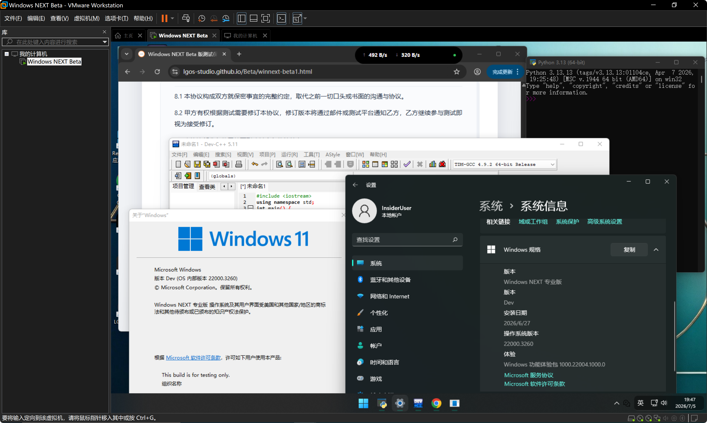

重新定义人与系统的交互方式。
极简、流畅、智能 —— 下一代操作系统雏形，今日开启。
从窗口管理到交互动效，每一像素都为效率与美感重新打磨。液态玻璃质感贯穿全局，通透而克制。
基于 NT 内核深度优化，启动速度提升 37%，内存占用降低 22%。同时保持对现有生态的高度兼容。
系统组件可独立更新，开发者可针对子系统自由扩展。Geometry 核心提供稳定的底层抽象。
本地 AI 引擎与微软云服务协同，实现跨设备状态同步、智能预测与自适应资源调度。
硬件级隔离、零信任默认策略、内存完整性保护 —— 从芯片到云端，构筑多层防御体系。
WinUI 3 + 全新 Geometry API，让开发者用更少的代码构建更惊艳的体验。文档与工具链全面升级。

Windows NEXT 开发代号 Geometry，寓意「以基本元素重构系统秩序」。 我们重新审视了每一层抽象 —— 从渲染管线到输入栈，从进程调度到通知中心， 让一切回归简洁、精准、可预测。
🔷 液态玻璃 · 最强通透效果